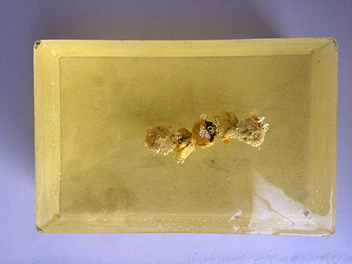
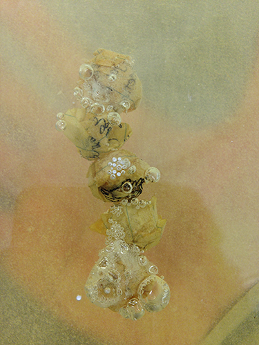
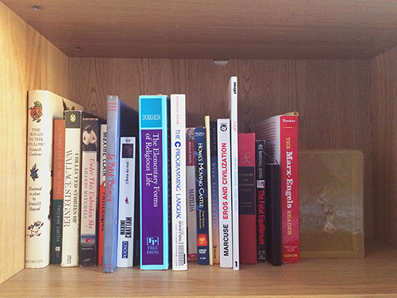
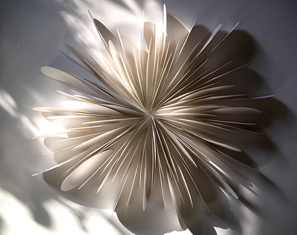
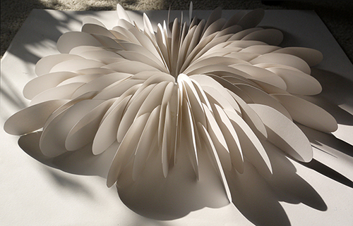

shhhhhhhhhhhh | resin + lined paper | 2015
i amassed secrets from friends and acquaintances who readily gave up a string of close-guarded words. i told them to write down a secret on a strip of paper (i did not read it). then i crumpled and encased them in clear resin. the paper sits inert in its fossilized container. i use this object sometimes as a paperweight, more often as a bookend, and the secrets enveloped by the resin are annulled, merging into the background as a common household object (though albeit a peculiar one) and observers and house guests are never able to recognize the full weight of the object being put to use.
this is not an object that alleviates through a confessional act. secrets as a concept are too contrite and as a mode of self-confession too personal for that kind of symbolism to succeed.


sea pineapples | bristol board | 2012
a repeating shape cut in paper was used to assimilate the structure of an ambiguous white coral-like specimen found at risd's nature lab. though at the time i was thinking more about easily stained and dusty white paper can get.